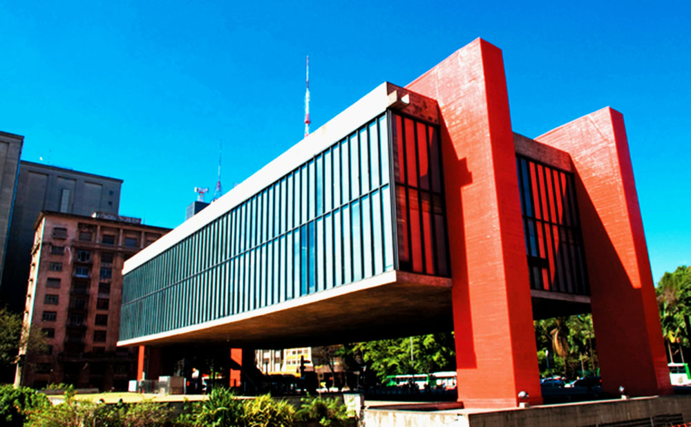

Bem-vindo ao Catálogo Nacional de Museus (CNM)!
O CNM é a maior e mais confiável fonte de informaçõe sobre museus disponível na internet. Catalogados na plataforma estão milhares de museus espalhados pelo país, dentre eles alguns dos mais importantes da América latina.
No CNM, você pode consultar endereços, telefones, preços, tipos de exposição e outras informações sobre o seu próximo destino cultural. Descubra os principais museus próximos de você, exposições incríveis e o oceano de cultura que os mais diversificados museus do Brasil têm a oferecer a você!
